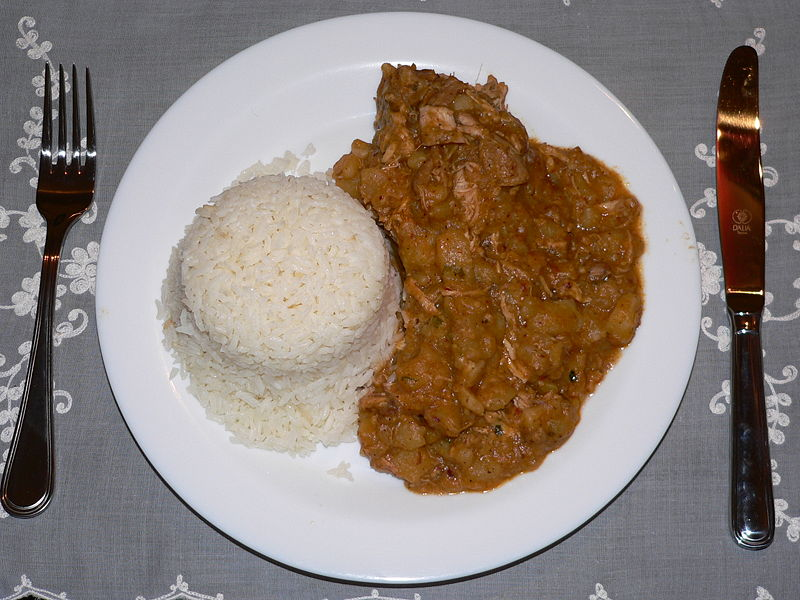

Carapulcra

Descripcion
La carapulcra es un delicioso plato tradicional de la gastronomía peruana, hecho a base de papa seca y una mezcla de especias y carnes que le dan un sabor único. Es una receta ideal para compartir en reuniones familiares o celebraciones especiales
Ingredientes
- 250 g de papa seca
- 300 g de carne de cerdo
- 300 g de pollo
- 1 cebolla roja picada
- 2 dientes de ajo
- 100 g de maní tostado y molido
- 2 cucharadas de pasta de ají panca
- 1 cucharadita de comino
- 1/2 cucharadita de pimienta
- Sal al gusto
- 1 litro de caldo de pollo o res
Pasos
- Remoja la papa seca en agua caliente por unas horas, luego escúrrela y enjuágala bien.
- En una olla, dora la carne de cerdo y el pollo hasta que estén dorados. Retira y reserva.
- Sofríe la cebolla, el ajo, el ají panca, el comino y la pimienta en la misma olla.
- Agrega la papa seca y mezcla bien con el sofrito.
- Incorpora el caldo, las carnes doradas y cocina a fuego lento durante 1 hora.
- Añade el maní molido, rectifica la sazón y cocina por 10 minutos más.
- Sirve caliente acompañado de arroz blanco.